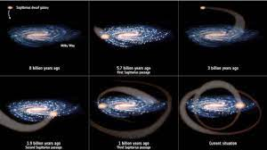

La formación y evolución de las galaxias son una de las áreas de investigación más activas de los estudios astrofísicos. Algunas ideas ya están ampliamente aceptadas. Las simulaciones informáticas han predicho las estructuras y distribución actuales que se ven en las galaxias.

Formación de las primeras galaxias
Los modelos cosmológicos actuales de los inicios del universo se basan en la teoría del Big Bang. Unos 300 000 años después de este acontecimiento, comenzaron a formarse los átomos de hidrógeno y helio en un nuevo suceso denominado recombinación. Casi todo el hidrógeno era neutro (no estaba ionizado) y absorbía con facilidad la luz. Todavía no se habían formado estrellas; por este motivo, este periodo se llama Edad Oscura. Fue a partir de las fluctuaciones de densidad (o irregularidades anisotrópicas) en esta materia primordial que las estructuras más grandes empezaron a aparecer. Como resultado, las masas de materia bariónica se condensaron dentro de halos de materia oscura fría. Estas estructuras primordiales se convertirían con el tiempo en las galaxias que vemos en la actualidad.